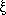
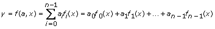

| Model Type | Displays the data and results according to a mathematical model type you specify. The model type can be any of the following options:
- Linear—Finds the slope and intercept of the line that best represents the input data set in the least-squares sense.
- Quadratic—Finds the polynomial curve of order 2 that best represents the input data set in the least-squares sense.
- Spline—Returns the spline interpolant of length n. n contains the second derivatives of the spline interpolating function g(x) at the tabulated points , where i = 0, 1, …, n – 1.
- Polynomial—Finds the set of polynomial fit coefficients that best represents the input data set in the least-squares sense.
- Polynomial order—Must be greater than or equal to zero. If Polynomial order is less than zero, the Express VI returns an error. The default is 5. This option is available only when you select the Polynomial option. The value of polynomial order must observe the following relationship:
0  m < n – 1, m < n – 1,
where n is the number of sample points, and m is Polynomial order.
- General least squares linear—Finds the k-dimension linear curve values and the set of k-dimension linear fit coefficients that best represents the input data set using the least-squares solution.
- Models—Individual functions of the independent variable. This option is available only when you select the General least squares linear option. In the following equation, the models are the functions of x, namely f0(x), f1(x), …, fn – 1(x).

where a = {a0, a1, a2, …, an – 1}
- Non-linear—Uses the Levenberg-Marquardt algorithm to determine the set of coefficients of the nonlinear model that best represents the input data set in the least-squares sense. The nonlinear model is expressed by a nonlinear function y = f(x,a), where a is the set of coefficients.
- Independent variable—Specifies the independent variable in Non-linear model. This option is available only when you select the Non-linear option.
- Maximum iterations—Maximum number of executing iterations. If the Express VI reaches Maximum iterations without finding a solution, the VI returns an error. You must increase Maximum iterations or adjust Initial guesses to find a solution. The default is 500. This option is available only when you select the Non-linear option.
- Initial guesses—Initial guesses of the solution coefficients. This option is available only when you select the Non-linear option.
- Current Model—Displays the formula for the currently selected Model Type. This display is available only when you set Model Type to Linear, Quadratic, Spline, Polynomial, or General least squares linear.
- Non-linear model—String that describes the model equation. This option is available only when you select the Non-linear option.
|
 Add to the block diagram
Add to the block diagram Find on the palette
Find on the palette